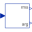

SinglePhaseTwoLevel_RLSingle phase DC to AC converter with R-L load |
Diagram
{kind=link}
Information
This information is part of the Modelica Standard Library maintained by the Modelica Association.
Plot current currentSensor.i, average current meanCurrent.y, voltage voltageSensor.v and average voltage meanVoltage.v. The instantaneous voltage directly show the switch pattern of the inverter. The current shows a particular ripple determined by the input voltage and the switching frequency. The average voltage is basically in phase with the command sine.y. The average current has a phase shift due to the R-L load.
Parameters (4)
| f |
Value: 1000 Type: Frequency (Hz) Description: Switching frequency |
|---|---|
| R |
Value: 100 Type: Resistance (Ω) Description: Resistance |
| L |
Value: 1 Type: Inductance (H) Description: Inductance |
| f1 |
Value: 50 Type: Frequency (Hz) Description: AC frequency |
Components (12)
| constantVoltage_n |
Type: ConstantVoltage |
|
|---|---|---|
| inverter |
Type: SinglePhase2Level |
|
| currentSensor |
Type: CurrentSensor |
|
| voltageSensor |
Type: VoltageSensor |
|
| ground |
Type: Ground |
|
| signalPWM |
Type: SignalPWM |
|
| constantVoltage_p |
Type: ConstantVoltage |
|
| sine |
Type: Sine |
|
|  | fundamentalWaveVoltage |
Type: Harmonic |
| fundamentalWaveCurrent |
Type: Harmonic |
|
| resistor |
Type: Resistor |
|
| inductor |
Type: Inductor |